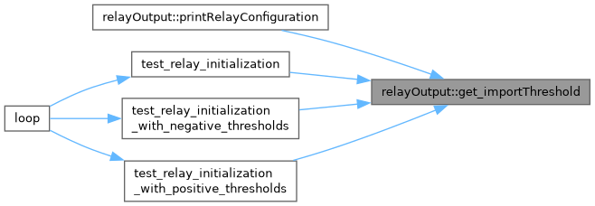
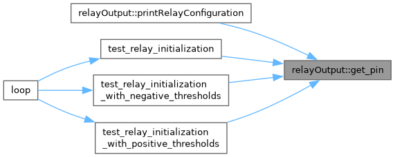
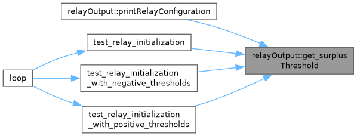
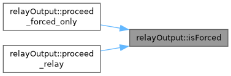
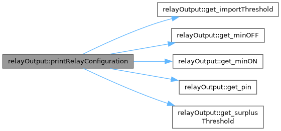
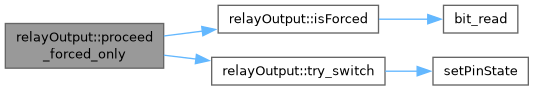
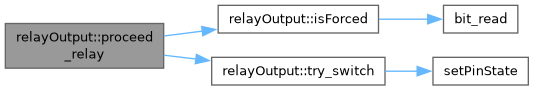
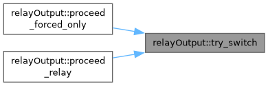

Represents a single relay configuration and its behavior. More...
#include <utils_relay.h>
Public Member Functions | |
| constexpr | relayOutput ()=delete |
| constexpr | relayOutput (const uint8_t _relay_pin) |
| Construct a new relay Config object with default parameters. | |
| constexpr | relayOutput (uint8_t _relay_pin, int16_t _surplusThreshold, int16_t _importThreshold) |
| Construct a new relay Config object with default/custom parameters. | |
| constexpr | relayOutput (uint8_t _relay_pin, int16_t _surplusThreshold, int16_t _importThreshold, uint16_t _minON, uint16_t _minOFF) |
| Construct a new relay Config object with custom parameters. | |
| constexpr auto | get_importThreshold () const |
| Get the import threshold which will turns OFF the relay. | |
| constexpr auto | get_minOFF () const |
| Get the minimum OFF-time in seconds. | |
| constexpr auto | get_minON () const |
| Get the minimum ON-time in seconds. | |
| constexpr auto | get_pin () const |
| Get the control pin of the relay. | |
| constexpr auto | get_surplusThreshold () const |
| Get the surplus threshold which will turns ON the relay. | |
| void | inc_duration () const |
| Increment the duration of the current state. | |
| auto | isRelayON () const |
| Return the state. | |
| void | printRelayConfiguration (uint8_t idx) const |
| Print the configuration of the current relay-diversion. | |
| bool | proceed_forced_only (const uint16_t overrideBitmask) const |
| Proceed with the relay while diversion is disabled: ON only while forced. | |
| bool | proceed_relay (const int32_t currentAvgPower, const uint16_t overrideBitmask) const |
| Proceed with the relay. | |
Private Member Functions | |
| bool | isForced (const uint16_t overrideBitmask) const |
| bool | try_switch (const bool on) const |
| Turn the relay ON or OFF if the 'time' condition is met. | |
Private Attributes | |
| uint16_t | duration { 0 } |
| const int16_t | importThreshold { 200 } |
| const uint16_t | minOFF { 5 * 60 } |
| const uint16_t | minON { 5 * 60 } |
| const uint8_t | relay_pin { unused_pin } |
| bool | relayIsON { false } |
| const int16_t | surplusThreshold { -1000 } |
Detailed Description
Represents a single relay configuration and its behavior.
The relayOutput class encapsulates the configuration and state management of a single relay. It provides methods to control the relay based on surplus and import thresholds, as well as minimum ON/OFF durations.
- Relay Control: The relay is turned ON when the surplus threshold is exceeded and turned OFF when the import threshold is crossed.
- Time Constraints: Minimum ON and OFF durations ensure stable operation.
- State Management: The class tracks the relay's current state and the duration of its current state.
Definition at line 40 of file utils_relay.h.
Constructor & Destructor Documentation
◆ relayOutput() [1/4]
|
constexprdelete |
◆ relayOutput() [2/4]
|
inlineexplicitconstexpr |
Construct a new relay Config object with default parameters.
- Parameters
-
_relay_pin Control pin for the relay
Definition at line 50 of file utils_relay.h.
◆ relayOutput() [3/4]
|
inlineconstexpr |
Construct a new relay Config object with default/custom parameters.
- Parameters
-
_relay_pin Control pin for the relay _surplusThreshold Surplus threshold to turn relay ON (positive value, e.g., 1000) _importThreshold Import threshold to turn relay OFF - Positive values: turn OFF when importing > threshold (normal installations)
- Negative values: turn OFF when surplus < abs(threshold) (battery systems)
- Zero: turn OFF when importing > 0W (problematic with batteries)
Definition at line 65 of file utils_relay.h.
◆ relayOutput() [4/4]
|
inlineconstexpr |
Construct a new relay Config object with custom parameters.
- Parameters
-
_relay_pin Control pin for the relay _surplusThreshold Surplus threshold to turn relay ON (positive value, e.g., 1000) _importThreshold Import threshold to turn relay OFF - Positive values: turn OFF when importing > threshold (normal installations)
- Negative values: turn OFF when surplus < abs(threshold) (battery systems)
- Zero: turn OFF when importing > 0W (problematic with batteries)
_minON Minimum duration in minutes to leave relay ON _minOFF Minimum duration in minutes to leave relay OFF
Definition at line 82 of file utils_relay.h.
Member Function Documentation
◆ get_importThreshold()
|
inlineconstexpr |
Get the import threshold which will turns OFF the relay.
- Returns
- constexpr auto
Definition at line 112 of file utils_relay.h.

◆ get_minOFF()
|
inlineconstexpr |
Get the minimum OFF-time in seconds.
- Returns
- constexpr auto
Definition at line 132 of file utils_relay.h.
◆ get_minON()
|
inlineconstexpr |
Get the minimum ON-time in seconds.
- Returns
- constexpr auto
Definition at line 122 of file utils_relay.h.
◆ get_pin()
|
inlineconstexpr |
Get the control pin of the relay.
- Returns
- constexpr auto
Definition at line 92 of file utils_relay.h.

◆ get_surplusThreshold()
|
inlineconstexpr |
Get the surplus threshold which will turns ON the relay.
- Returns
- constexpr auto
Definition at line 102 of file utils_relay.h.

◆ inc_duration()
|
inline |
Increment the duration of the current state.
This function must be called every second.
Definition at line 152 of file utils_relay.h.
◆ isForced()
|
inlineprivate |
Definition at line 234 of file utils_relay.h.

◆ isRelayON()
|
inline |
◆ printRelayConfiguration()
|
inline |
Print the configuration of the current relay-diversion.
Definition at line 190 of file utils_relay.h.

◆ proceed_forced_only()
|
inline |
Proceed with the relay while diversion is disabled: ON only while forced.
- Parameters
-
overrideBitmask Override bitmask (local pins)
- Returns
- bool True if state has changed
The minimum ON and OFF times still apply.
Definition at line 228 of file utils_relay.h.

◆ proceed_relay()
|
inline |
Proceed with the relay.
- Parameters
-
currentAvgPower Current average power overrideBitmask Override bitmask (local pins): the relay is forced ON while its bit is set
- Returns
- bool True if state has changed
Definition at line 167 of file utils_relay.h.

◆ try_switch()
|
inlineprivate |
Turn the relay ON or OFF if the 'time' condition is met.
- Parameters
-
on True to turn the relay ON, false to turn it OFF
- Returns
- bool True if state has changed
Definition at line 245 of file utils_relay.h.

Member Data Documentation
◆ duration
|
mutableprivate |
Duration of the current state
Definition at line 269 of file utils_relay.h.
◆ importThreshold
|
private |
Import threshold to turn relay OFF (positive = import mode, negative = surplus mode)
Definition at line 265 of file utils_relay.h.
◆ minOFF
|
private |
Minimum duration in seconds the relay is turned OFF
Definition at line 267 of file utils_relay.h.
◆ minON
|
private |
Minimum duration in seconds the relay is turned ON
Definition at line 266 of file utils_relay.h.
◆ relay_pin
|
private |
Pin associated with the relay
Definition at line 263 of file utils_relay.h.
◆ relayIsON
|
mutableprivate |
True if the relay is ON
Definition at line 270 of file utils_relay.h.
◆ surplusThreshold
|
private |
Surplus threshold to turn relay ON
Definition at line 264 of file utils_relay.h.
The documentation for this class was generated from the following file:
- Mk2_3phase_RFdatalog_temp/utils_relay.h
Generated by